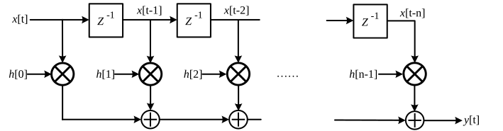

layout: true class: typo, typo-selection --- count: false class: nord-dark, middle, center # 📝 From Markdown to TeX ## A Pandoc paper pipeline — and the traps that break it 🪤 ### 📄 ➜ ⚙️ ➜ 📐 ➜ 📕 @luk036 👨💻 · 2026 📅 --- ### 📋 Agenda .pull-left[ **🔧 Part 1 — The Pipeline** - Why Markdown, not raw TeX? - pandoc + crossref + citeproc - Anatomy of a source file **⚙️ Part 2 — The Build** - The command, flag by flag - One entry point: `make` ] .pull-right[ **🐛 Part 3 — War Stories** - Emoji & Unicode ☠️ - SVG figures 🖼️ - Headings & cleveref 🧩 - Offline citations 📴 **🎯 Part 4 — Takeaways** - A reproducibility checklist ] --- class: nord-light, middle, center ## 🔧 Part 1 — The Pipeline --- ### 🤔 Why Write Markdown, Not Raw TeX? .pull-left[ **Markdown wins** ✅ - Readable **plain text** 📖 - Diffs are *semantic*, not `\begin{}` noise 🔍 - Math stays LaTeX 📐 - One source → PDF · HTML · slides 🎯 ] .pull-right[ **But TeX wins at** 🏆 - Precise typesetting 📕 - Journal classes 🏛️ - Cross-refs, citations, floats 🔢 ] > **pandoc** is the bridge: Markdown **in**, TeX **out**, then a real engine compiles it. 🌉 --- ### 🏭 The Toolchain .mermaid[ <pre> graph LR MD["📝 ell-review.md\nMarkdown + YAML"] --> P["pandoc"] Y["🗂️ latex.yaml / beamer.yaml"] --> P B["📚 *.bib\nBibTeX data"] --> CP["citeproc"] S["🎨 *.csl\ncitation style"] --> CP P --> X["pandoc-crossref\nsec / fig / eq / tbl"] CP --> T["📜 generated TeX"] X --> T T --> E["pdflatex / xelatex"] E --> PDF["📕 ell-review.pdf"] style MD fill:#e3f2fd,stroke:#1565c0,stroke-width:3px style Y fill:#e3f2fd,stroke:#1565c0,stroke-width:3px style P fill:#fff9c4,stroke:#f57f17,stroke-width:3px style B fill:#d1c4e9,stroke:#6a1b9a,stroke-width:3px style S fill:#d1c4e9,stroke:#6a1b9a,stroke-width:3px style CP fill:#d1c4e9,stroke:#6a1b9a,stroke-width:3px style X fill:#fff9c4,stroke:#f57f17,stroke-width:3px style T fill:#fce4ec,stroke:#ad1457,stroke-width:3px style E fill:#e8f5e9,stroke:#2e7d32,stroke-width:3px style PDF fill:#d5f5e3,stroke:#2e7d32,stroke-width:4px </pre> ] --- ### 🧬 Anatomy of a Pandoc-Markdown Paper Everything is plain text — but each `@`-thing is **load-bearing**: | syntax | meaning | |:--|:--| | YAML front matter | metadata: title, author, bibliography 🗂️ | | `## Heading {#sec:foo}` | a **labelled** heading 🏷️ | | `@sec:foo` | cross-reference → “§ 2” 🔗 | | `[@BGT81]` | citation → “[1]” 📚 | | math delimiters | inline & display math 📐 | | `` | a figure 🖼️ | > A typo in any of these becomes a **`??`**, a missing reference, or a hard build error. ⚠️ --- ### 🗂️ YAML Front Matter = Document Metadata ```yaml title: "Ellipsoid Method and the Amazing Oracles" bibliography: ["ellipsoid.bib", "fir-ref.bib"] csl: "applied-mathematics-letters.csl" abstract: | The ellipsoid method is a powerful optimization technique ... ``` - `title` / `author` → `\title` / `\author` 📕 - `bibliography` → which BibTeX files to search 📚 - `csl` → the **citation style** 🎨 - Extra YAML files add **class options**: `latex.yaml`, `crossref.yaml` ⚙️ > Metadata is passed as **positional inputs** *before* the `.md`: `pandoc ell-review.yaml latex.yaml crossref.yaml ell-review.md`. 🧩 --- ### 📚 Citations: From `[@key]` to `[1]` .mermaid[ <pre> graph LR K["citation in the source"] --> CP["citeproc"] DB[("📚 ellipsoid.bib\nBibTeX records")] --> CP CSL[("🎨 applied-math.csl\nCSL style")] --> CP CP --> N["[1]\nnumeric citation"] CP --> REF["📖 References section\nauto-generated"] style K fill:#e3f2fd,stroke:#1565c0,stroke-width:3px style DB fill:#fff9c4,stroke:#f57f17,stroke-width:3px style CSL fill:#d1c4e9,stroke:#6a1b9a,stroke-width:3px style CP fill:#d1c4e9,stroke:#6a1b9a,stroke-width:3px style N fill:#d5f5e3,stroke:#2e7d32,stroke-width:3px style REF fill:#d5f5e3,stroke:#2e7d32,stroke-width:3px </pre> ] - `[@key]` parenthetical · `@key` narrative · `[@a; @b]` multiple ✍️ - Cite only keys in a **listed** `.bib` — otherwise the reference silently vanishes 🕳️ --- ### 🔗 Cross-References: From `@sec:label` to “§ 2” .mermaid[ <pre> graph LR L["labelled heading\n{#sec:cutting_plane}"] --> X["pandoc-crossref"] R["reference\nsee @sec:cutting_plane"] --> X X --> OUT["see § 2"] style L fill:#e3f2fd,stroke:#1565c0,stroke-width:3px style R fill:#e3f2fd,stroke:#1565c0,stroke-width:3px style X fill:#fff9c4,stroke:#f57f17,stroke-width:3px style OUT fill:#d5f5e3,stroke:#2e7d32,stroke-width:3px </pre> ] - Label prefixes: `sec` · `fig` · `eq` · `tbl` · `lst` 🏷️ - **The separator is file-specific** ⚠️ — `ell-review.md` uses `_`, `ell-review2.md` uses `-` - A mismatched separator **silently breaks** the link → `??` 🕳️ --- ### 📐 Math: LaTeX Syntax, Rendered Twice Markdown math **is** LaTeX — pandoc passes it through, and the web renders it with KaTeX: $$ \mathcal{E}(x_c, P) \;=\; \{\, x \;\mid\; (x - {\color{#5e81ac}x_c})^{\top} {\color{#bf616a}P}^{-1} (x - {\color{#5e81ac}x_c}) \;\le\; 1 \,\} $$ - In the **PDF** → real TeX, typeset by the LaTeX engine 📕 - In the **HTML** → KaTeX, pre-rendered on the raw source 📐 > ⚠️ Keep math **inside math delimiters**. Bare Unicode (`τ`, `x²`) in running text is what breaks `pdflatex`. ☠️ --- class: nord-light, middle, center ## ⚙️ Part 2 — The Build --- ### 🛠️ The Command, Flag by Flag ```bash pandoc -F pandoc-crossref --citeproc -s -t latex -N --reference-links \ --shift-heading-level-by=-1 \ --csl=applied-mathematics-letters.csl \ ell-review.yaml latex.yaml crossref.yaml ell-review.md -o ell-review.pdf ``` | flag | what it does | |:--|:--| | `-F pandoc-crossref` | resolve heading / figure / equation labels 🏷️ | | `--citeproc` | process citations + build References 📚 | | `-s -t latex` | standalone LaTeX 📜 | | `--shift-heading-level-by=-1` | `##` → `\section` 🪜 | | `--csl=…` | pick the citation style 🎨 | | `*.yaml` before the `.md` | metadata inputs 🗂️ | --- ### 🧩 `pandoc-crossref`: `cref`, or plain `ref`? .mermaid[ <pre> graph TD CFG{"crossref.yaml\ncref option"} --> TT["true → cleveref"] CFG --> FF["false → ref + §"] TT --> C["cleveref package"] FF --> R["plain reference"] C --> OK["plain article: fine ✅"] C --> BAD["siamltex class: ?? ❌"] R --> GOOD["always works ✅"] style CFG fill:#d1c4e9,stroke:#6a1b9a,stroke-width:3px style TT fill:#e3f2fd,stroke:#1565c0,stroke-width:3px style FF fill:#fff9c4,stroke:#f57f17,stroke-width:3px style C fill:#e3f2fd,stroke:#1565c0,stroke-width:3px style R fill:#fff9c4,stroke:#f57f17,stroke-width:3px style OK fill:#d5f5e3,stroke:#2e7d32,stroke-width:3px style GOOD fill:#d5f5e3,stroke:#2e7d32,stroke-width:3px style BAD fill:#fadbd8,stroke:#c0392b,stroke-width:4px </pre> ] > Our policy: **`cref: false`** — a plain reference plus a literal **§** prefix. No cleveref, no `??`. 🎯 --- class: nord-light, middle, center ## 🐛 Part 3 — War Stories --- ### ☠️ War Story 1: Emoji & Unicode Break `pdflatex` - One emoji 🪜 → `! Unicode character (U+1FA9C) not set up for use with LaTeX` ❌ - But also **bare Unicode math** in running text: `x²`, `≤`, `τ`, `β₁`, `→` ☠️ $$ \text{broken: } \; x^2/4 \;\; \text{good: } \; {\color{#a3be8c}\tfrac{x^2}{4} + y^2 \le 1} $$ .mermaid[ <pre> graph LR E["🪜 emoji & bare Unicode"] --> ERR["pdflatex:\nUnicode not set up"] FIX["wrap math in delimiters"] --> OK["builds ✅"] style E fill:#fadbd8,stroke:#c0392b,stroke-width:4px style ERR fill:#fadbd8,stroke:#c0392b,stroke-width:4px style FIX fill:#fff9c4,stroke:#f57f17,stroke-width:3px style OK fill:#d5f5e3,stroke:#2e7d32,stroke-width:3px </pre> ] > Rule: **ASCII inside math, no emoji in sources** — or switch the engine to `xelatex`. 🔤 --- ### 🐛 War Story 2: `\argmax` Is Not a Command - The source wrote `\argmax` — but neither LaTeX nor KaTeX defines it ❌ - Result: `! Undefined control sequence` — the build stops 🛑 The fix is a *real* operator 🪄 $$ q_{\max} \;=\; {\color{#a3be8c}\operatorname*{arg\,max}_{q \in \mathcal{Q}}}\; f_0(x_0, q) $$ - `\operatorname*{arg\,max}` needs `amsmath` — pandoc already loads it ✅ - The **same bug** hid in `cutting_plane.md` (the slides) → fix once, fix everywhere 🔁 --- ### 🪜 War Story 3: Heading Levels → `\section` A formatter demoted `#` → `##`; pandoc then emitted **no** `\section` at all. .mermaid[ <pre> graph LR H1["level-1 heading"] --> S["section\nnumbering 1, 2 ✅"] H2["level-2 heading"] --> SS["subsection\nnumbering 0.1, 0.2 😱"] style H1 fill:#d5f5e3,stroke:#2e7d32,stroke-width:3px style S fill:#d5f5e3,stroke:#2e7d32,stroke-width:3px style H2 fill:#fadbd8,stroke:#c0392b,stroke-width:4px style SS fill:#fadbd8,stroke:#c0392b,stroke-width:4px </pre> ] - Before: body headings at `#` → `\section` → “**1. Introduction**” ✅ - After the demotion: every heading became `\subsection` → “**0.1 Introduction**” 😱 - Fix **without touching the prose**: `--shift-heading-level-by=-1` 🪄 --- ### 🖼️ War Story 4: SVG Figures Need a Converter .mermaid[ <pre> graph TD IMG["figure link to *.svg"] --> P{"pandoc → LaTeX"} P -->|rsvg-convert found| PDF["svg → pdf\nincludegraphics ✅"] P -->|missing| SVG["svg package + InkScape\n+ shell-escape ❌"] P -->|pdf twin exists| TWIN["use the *.pdf directly ✅"] style IMG fill:#e3f2fd,stroke:#1565c0,stroke-width:3px style P fill:#fff9c4,stroke:#f57f17,stroke-width:3px style PDF fill:#d5f5e3,stroke:#2e7d32,stroke-width:3px style TWIN fill:#d5f5e3,stroke:#2e7d32,stroke-width:3px style SVG fill:#fadbd8,stroke:#c0392b,stroke-width:4px </pre> ] - `pdflatex` cannot read `.svg` — pandoc wants **`rsvg-convert`** (librsvg) 🏭 - Missing it → fallback to the LaTeX `svg` package → needs **InkScape + `--shell-escape`** ❌ - Our shortcut: reference the **`.pdf` twin** that already ships beside every `.svg` 🎯 --- ### 😱 War Story 5: `rsvg-convert` Drops Text Without a fontconfig, `rsvg-convert` renders **no text at all** — geometry only. <p align="center"> <p></p> </p> - This figure lost every label (`h[0]`, `x[t-1]`, `y[t]`) in the converted PDF 🏷️ - A picture can look “present” yet be **informationally empty** 🕳️ - Always **inspect the output** — or diff extracted text with `pdftotext` 🔍 --- ### 🧩 War Story 6: cleveref vs `siamltex.cls` .mermaid[ <pre> graph TD CL["cleveref hooks the label\nand counter machinery"] --> M["but siamltex.cls\nredefines label + counter"] M --> E["label type = empty\n→ every reference is ?? ❌"] FIX["crossref: cref = false\n§ + plain reference"] --> OK["§ 2, § 3.1 ✅"] style CL fill:#e3f2fd,stroke:#1565c0,stroke-width:3px style M fill:#fadbd8,stroke:#c0392b,stroke-width:4px style E fill:#fadbd8,stroke:#c0392b,stroke-width:4px style FIX fill:#fff9c4,stroke:#f57f17,stroke-width:3px style OK fill:#d5f5e3,stroke:#2e7d32,stroke-width:3px </pre> ] - Proven with a **minimal test**: `article` + cleveref → fine; `siamltex` + cleveref → `??` 🔬 - **Latest pandoc** does not help — it is the **class**, not the version 📌 - Switching to `cref: false` restores “§ 2” and removes every `??` ✅ --- ### 📴 War Story 7: Citations That Phone Home .mermaid[ <pre> graph LR A["*.csl is a dependent style"] --> B["independent-parent =\nelsevier-with-titles"] B --> NET["🌐 fetch from zotero.org"] NET --> FAIL["ConnectionTimeout ❌"] INLINE["inline the parent style"] --> SELF["self-contained ✅ offline"] style A fill:#e3f2fd,stroke:#1565c0,stroke-width:3px style B fill:#e3f2fd,stroke:#1565c0,stroke-width:3px style NET fill:#fadbd8,stroke:#c0392b,stroke-width:4px style FAIL fill:#fadbd8,stroke:#c0392b,stroke-width:4px style INLINE fill:#fff9c4,stroke:#f57f17,stroke-width:3px style SELF fill:#d5f5e3,stroke:#2e7d32,stroke-width:3px </pre> ] - That CSL file was only a **stub** — its citation / bibliography logic lived in a parent 🧩 - Every fresh machine / CI fetches it → flaky and **non-reproducible** 🎲 - Fix: **vendor the parent** → `--citeproc` works **offline** (verified with a dead proxy) 🔒 --- class: nord-light, middle, center ## 🎯 Part 4 — Engineering the Build --- ### ⚙️ One Entry Point: the `Makefile` | target | produces | |:--|:--| | `make paper` | `ell-review.pdf` 📕 | | `make html` | `ell-review.html` (needs `katex/`) 🌐 | | `make slides` | `cutting_plane.pdf`, `ell.pdf` (xelatex) 🖥️ | | `make clean` | remove `temp.*` and aux files 🧹 | ```make paper: ell-review.pdf ell-review.pdf: ell-review.md pandoc -F pandoc-crossref --citeproc -s -t latex -N \ --reference-links --shift-heading-level-by=-1 \ --csl=applied-mathematics-letters.csl \ ell-review.yaml latex.yaml crossref.yaml ell-review.md -o ell-review.pdf ``` > The `Makefile` records the **flags *and* the reasons** — no more tribal knowledge. 📌 --- ### 🪟 Make on Windows: Two Gotchas .pull-left[ **1. Recipes are exec'd directly** 🐚 - A *simple* recipe runs **without a shell** - `rm` is not an `.exe` here → `CreateProcess failed` ❌ - Force a shell with a metacharacter ✅ ```make clean: -@rm -f temp.tex temp.pdf ; true ``` ] .pull-right[ **2. Line endings** 📏 - LF in the repo, CRLF on disk - Keeps diffs **logical**, not whole-file 🔍 **3. Version-matched tools** ⚖️ - `pandoc` and `pandoc-crossref` must agree - A mismatch warns and can misbehave silently 🎭 ] --- ### 🧹 Repo Hygiene - **Editor backups** (`*~`, `*.un~`) — untrack and `.gitignore` them 🗑️ - **Stale outputs** (`ell-review.tex`, `main-diff.*`) — generated, not source 📜 - **One self-contained CSL** — no network at build time 📴 - **One linter, one config** — two disagreeing linters equal *zero* linters 🎭 - **Refresh `AGENTS.md`** — write the *why* while it is fresh 🧠 .mermaid[ <pre> graph LR A["commit sources only"] --> B["artifacts generated,\nnever hand-edited"] B --> C["reproducible:\nany machine, offline ✅"] style A fill:#e3f2fd,stroke:#1565c0,stroke-width:3px style B fill:#fff9c4,stroke:#f57f17,stroke-width:3px style C fill:#d5f5e3,stroke:#2e7d32,stroke-width:3px </pre> ] --- ### 🔍 Verify the Artifact, Not the Exit Code ```bash make paper # exit 0 is necessary, not sufficient pdfinfo ell-review.pdf # page count 📄 pdftotext ell-review.pdf - | grep -c '??' # unresolved references 🔗 ``` - `??` count → did the cross-references resolve? 🔗 - Extracted text → are the **figure labels** present? (catches dropped SVG text) 🏷️ - Page count → did the build actually **change** anything? 📄 - A tiny **CI job** running `make paper` would have caught the stale PDF 🚨 --- ### ✅ Reproducibility Checklist .pull-left[ **Dependencies** 📦 - pandoc **and** pandoc-crossref, version-matched ⚖️ - a LaTeX engine (`pdflatex` / `xelatex`) 📐 - an SVG converter **or** committed PDF twins 🖼️ ] .pull-right[ **Sources** 📝 - a self-contained CSL (offline) 📴 - ASCII math, no emoji (or xelatex) 🔤 - exactly one crossref policy ⚙️ ] .mermaid[ <pre> graph LR A["same inputs"] --> B["same command"] --> C["same output ✅"] style A fill:#e3f2fd,stroke:#1565c0,stroke-width:3px style B fill:#fff9c4,stroke:#f57f17,stroke-width:3px style C fill:#d5f5e3,stroke:#2e7d32,stroke-width:3px </pre> ] --- ### 🎯 Key Takeaways **The pipeline** 🏭 - pandoc + crossref + citeproc turns Markdown into journal-ready TeX 📕 - One `make` target beats a notebook of shell history 📓 **The traps** 🪤 - Non-ASCII (emoji, bare Unicode) kills `pdflatex` ☠️ - Old classes can break cleveref → every reference becomes `??` 🧩 - “Standard-looking” macros may not exist (`\argmax`) 🐛 **The habit** 🧠 - Inspect the **artifact**, not the exit code 🔍 - Vendor **everything** remote — a build must work offline 📴 --- ### 📚 References & Further Reading - **pandoc** — [the user's guide & MANUAL](https://pandoc.org/MANUAL.html) 📖 - **pandoc-crossref** — labels for sections, figures, equations 🔗 - **CSL — Citation Style Language** — [citationstyles.org](https://citationstyles.org) 🎨 - **cleveref** — and why older document classes can fight it 🧩 - The paper: **“Ellipsoid Method and the Amazing Oracles”** 📕 > Assembled for the `ellipsoid-method` repo; the full checklist lives in **issue #4**. 🗂️ --- count: false class: nord-dark, middle, center # 🙋 Q&A **From Markdown to TeX — A Pandoc Paper Pipeline** ### Questions? Discussion? 💬 --- count: false class: nord-dark, middle, center # 👏 Thank You ## Same input, same command, same output. 🎯 Slides built with Remark.js 🎉 | KaTeX 📐 | Mermaid 🧩 | Nord Theme 🌙